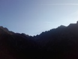
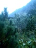

Jeseň 2017
2017 · Slovensko
Jeseň 2017
Vysoké Tatry
Tak písať o lezeckej jeseni na konci januára to je riadna haluška, no keď si pán Predseda niečo zaumieni, tak podpredseda musí v štýle päty spolu-špičky od seba-unožiť, pokorne sklopiť zrak a vykonať čo si jeho blahorodie praje.
Bude to asi čudné, ale ja si už len tak matne spomínam, že čo bolo. Normálne som lovil, lovil v pamäti a len malú mozajku vytvoril. Potom som kukol foto a už som si spomenul. Takže je nad slnko jasné, že aj kvalita nasledujúceho článku bude skôr faktografická a fotografická ako opisná. Asi som sa medzičasom niekde resetol. Ano je to možné J, nevylučujem ani túto možnosť.
Takže prelom august/september. To sme si s Horárom zaumienili vybrať sa do Tatier. Na tom by nebolo nič čudné. Ale ja som sa vybral s tým, že ma boli „trochu“ palec. Večer sme sa dohodli, že lezenie bude síce dlhé, ale kompenzovať to bude o to dlhší nástup. Čiže Západný pilier na Veľký Ganek za V. http://www.tatry.nfo.sk/cesta.php?obr=stity//0159//01590803.p.
Ani nie 3h nástup aaaaaaaa
Ďalekooo. Ale to je nič. Lebo ráno som sa zobudil a palec bolel jak hovado a hovorím si kua, šak v tomto stave nedojdem ani na Popradské na pivo. Tak som hneď vytasil lekárničku i s chuťou prehltol najsilnejšie antireumatikum (to som v tom čase netušil). No a zrazu som sa objavil na Popradskom a ja si vôbec nepamätám cestu tam. Hodina zo života sa vytratila. Vtedy som začal tušiť, že to čo som ráno prehltol to nebolo len tak. Nehovoriac o tom, že som sa začal cítiť dobre. Nafetovaný ako Hermann Buhl J. Na Popradskom klasické občerstvenie, ked sme sa postavili do rady medzi ostatných nastajlovaných, poväčšinou českých a poľských lezcov. Objednávali si kakajko a podobné ukážkové raňajkové menu. Nuž sme si objednali s Polesným to naše menu. Dve piva. Ako som ich tak niesol, kútikom oka som zaregistroval ako ma hypnotizujú a odprevádzajú k stolu čiesi oči. To proste cítim. A o chvílu tam už aj bol za nami. Dosledoval ma a pohľad ho doviedol až k Horárovi. Bol to jeho druh v zbrani z mladých lezeckých čias. Pivo spája obyvateľstvo:)
No tak po doplnení prepotrebných vitamínov sme sa (ja už vo forme) zrazu presunuli v čase pod nástup piliera. Ako sa tak súkame do výstroje a vešiame všetky tie serepetičky na seba, tak počujem z diaľky ten hrozivý, už známy a asi najhorší zvuk v horách. Zvuk padajúceho kameňa. Niečo medzi zvukom vrtulníka a torpéda (slúžil som u mariňakov tak ho poznám), ktorý sa ku mne blíži rýchlosťou takou, že keď ma to trafí, tak preletí mojím telíčkom naskrz. Šuter sa našťastie odrazil a doletel asi tak 5-7m od nás. A ten polský debo v prvej dĺžke kričí, že dajce swoj helm. Chumaj. To nechápem ako niekto v pevnej skale nájde jediný loker v ceste a jebne ho bezstarostne dole a potom ťa zprdne, že daj si prilbu. Polska. Takže začiatok sme prežili, polskí alpinisti sú ešte nad nami, ale dúfame, že čoskoro zahnú do prd...
No a potom to bolo už len pekné polezeníčko v pevnej skale, užívačka v krásnom slnečnom počasí. A počas toho sa nič zvláštneho nestalo. Ba vlastne stalo Kefalín. Úplne som zabudol, že mám na nohách lezečky a že ma bolel ráno paleček. A pozrime ho ešte by som aj na zábavu v lezečkách mohol ísť. Večer o 21.00 sme boli už aj pri aute:). Krásny slnečný výlet.
Aj zaslúžené pivo na popradskom šmakovalo.




Nasledujúci výlet bol bol už v trojici. Posilnil naše rady už Predseda Dušanko.
Večer zjedol v BC asi tak polovicu prútenného košíka cukríkov, lapajko jedon J
Dohodli sme si zvoliť kratší nástup, aby sme vládali aj druhý deň niečo zaliezť. Výber padol na Velické Granáty. Konkrétne do Granátovej steny na pravé rebro. http://www.tatry.nfo.sk/cesta.php?obr=stity//0186//01860813.p
Malo byť polojasno, teplota v pohodičke jesenná. Aký omyl. Celý deň zamračené, tak som nepremrzol na štande ani v zime. Zase sa meteorologovia s nami zahrali ich obľúbenú hru. „Choď tam a zistíš ako je“ No ale veď išli by sme aj v tomto počku liezť, len by som si pribalil aj niečo teplejšieho do batohu J. Lezenie rebrom bolo fajn, je to vlastne sústava vežičiek, ktoré buď preliezaš alebo po stranách obliezaš. Najkrajšia bola tá prvá. Granátový mních. Všetko ostatné išlo ako po masle, aj sme sa zohriali aj sme zo sliezskeho odvoz zohnali. Moc hezké spomínky budu mýt J. Aj sme boli vo výbornom čase v BC. Potrebovali sme ušetriť sily na nasledujúci deň, čo sa aj podarilo.


Zajtra.
Večer sme sa rozhodli pre dlhší nástup. Nuž si zrána vykračujeme na Zelené pleso. Dnes už predpoveď sedí. Dobre a celkom teplo. Tepla moc neužijeme dnes a ani toho slnka. Čaká nás Ľavý Y v severe Malého Kežmaráku. http://www.tatry.nfo.sk/cesta.php?obr=stity//1072//10720322.p
Po príchode na chatu dávame obvyklé menu. Pivo. Parádne zapasovalo, ubytovaní už majú po raňajkách a pomaly sa začínajú trúsiť po doline. Pred chatou stretávame postavu v obdivuhodných a rešpekt vzbudzujúcich trenkách zo spartakiády. Zase Horárov kamoš... Pod nástup sa ešte trochu zapotíme, na oko čoby kameňom dohodil, no na pešo ešte hoďka. Pomaly sa strácajú hlasy turistov nesúce sa od chaty. Nástup. Prvá dĺžka. Neskutočná jebáreň vo vlhkej machovej skale. Horár na prvom parádny výkon. Ostatné dĺžky už ok, aj kľúčová lahšia ako tá prvá. Výlez na Nemeckom rebríku vedľa Boceka. Zaujímavý kolorit.. Zostup po rebríku úplne v porádečku bez zádrhelu,osvieženie v Malom Čiernom plese, na chate sme v perfekt čase, ešte sú tu nejakí turisti. Pivečko a šibeme nadol. Cestou si pochlebujeme jeden druhému, že akú formu chytáme pred krásnou lezeckou jeseňou, ktorá nás čaká.
Ona jeseň už bola, ale alpinista mieni a život mení. Nás všetkých klubistov postihol nejaký Moribundus. Predsedu šlacha, Horára meniskus, Candáta kýčle a hlava a ja som si skočil salto cez bal linolea a odnieslo to jabĺčko v kolene. Predchádzala tomu búračka a môj seknutý krk. Každému grambľavému debilovi už dajú vodičák... Týždeň pred odletom do Nepálu. Ostal som doma pod duchnami sa liečiť. Zo všetkých sračiek. To mám z toho života aký vediem a s kým sa stýkam J A tak sme sa liečili, až sme si zrazu uvedomili, že je tu december. Vianočné trhy a sviatky fakt nemusím, ale začiatok zimného lezenia mi robí dosť dobre, až tak, že som si uvedomil –že je čas sa zo všetkého otriasť, zobrať zbrane a vyraziť do hôr zbíjať.
Ale o tom až v zimnej edícíí


Ivík môj
Pôvodná stránka: archív horecsport.sk